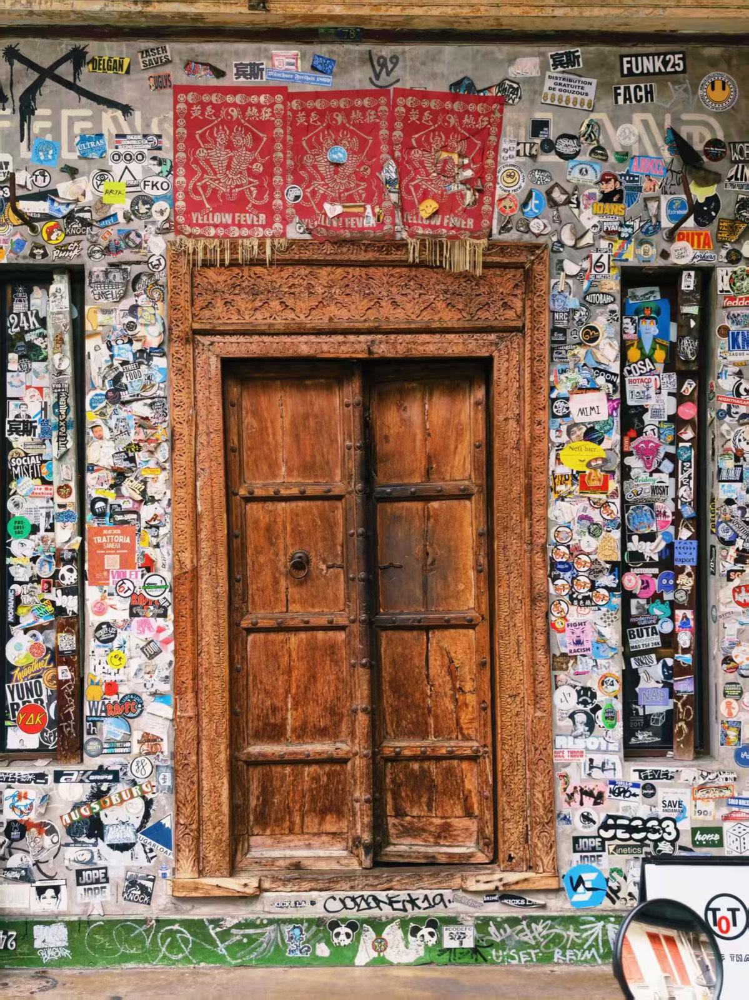
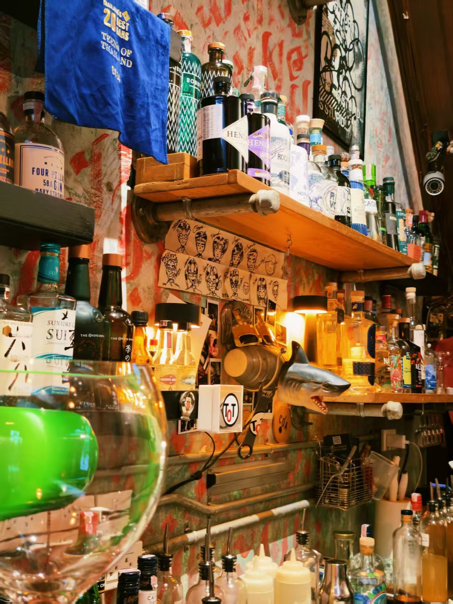
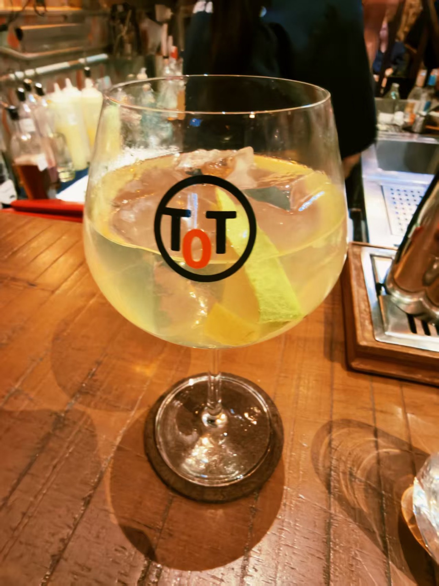

ToT
在唐人街逛着逛着想喝一杯，查到附近有家曾经进过 Asia's 50 Best 的店，就导航过去了。门口是一扇藏式木门，雕花的，立在贴满贴纸的墙中间，很别致。大隐隐于市。

店里是金酒吧，金酒摆满了整面架子。光线暗，音乐放松。转头看到墙上写着：「WELCOME ALL USELESS TEENS AND ALL USELESS MID-LIFE CRISIS Menopause Crisis!!」，文字和店名 Teens of Thailand 一样是年轻的风格。

去得早，点了杯 signature 的菊花金汤力，坐在吧台和调酒师聊了一会儿。是个泰国女生，挺热情。酒比较淡，无功无过，确实没什么可写的。

作为一天 bar tour 的头一家，还不错。